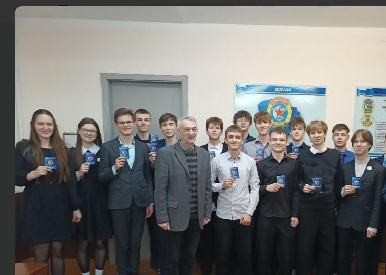
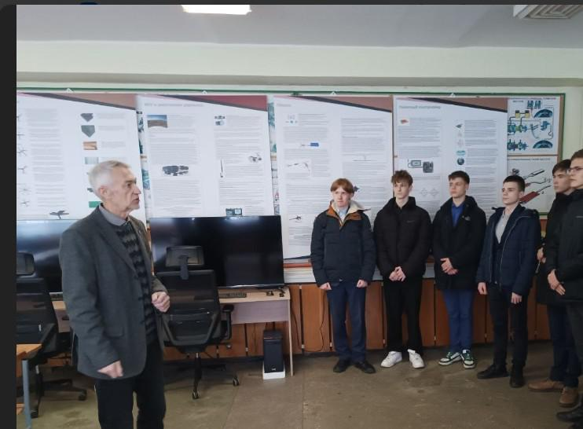
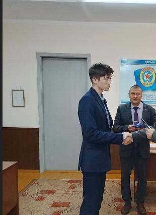
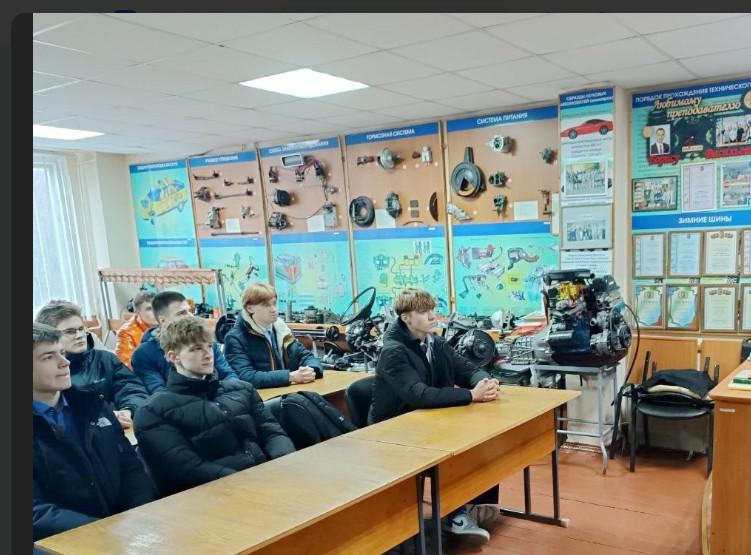

С ДНЕМ РОЖДЕНИЯ БОРИСОВСКАЯ ООС ДОСААФ!
23 ноября Борисовская объединенная организационная структура ДОСААФ отмечает свою 60-ю годовщину со дня образования. Именно в этот день Борисовский автомотоклуб 3-го разряда решениями республиканского и Минского областного комитетов ДОСААФ получил статус первой в городе самостоятельной учебной организации.
В мероприятиях, посвященных этой дате, приняли участие и учащиеся 11-х классов Государственного учреждения образования «Гимназия №1 г. Борисова». Заместитель председателя структуры Александр Миронов рассказал ребятам об истории образования ДОСААФ, целях и задачах структуры, специальностях по которым осуществляется подготовка специалистов в интересах Вооруженных Сил Республики Беларусь, провел экскурсию по учебным кабинетам, компьютерному классу и лаборатории практических занятий. Не осталась без внимания и информация о достижениях структуры и работниках ДОСААФ, добившихся наибольших успехов в подготовке водителей. Также, Александр Николаевич подробно ответил на все вопросы, которыми его засыпали гимназисты.

В завершении мероприятия состоялось торжественное вручение членских билетов ребятам, изъявившим желание вступить в организационную структуру. К слову сказать, в этом году получить членский билет изъявили желание 41 гимназист.


На протяжении всего дня ребята имели возможность написать заявления для последующего поступления в академию и институт МВД.
